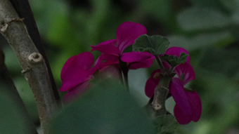
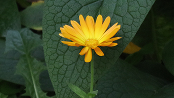
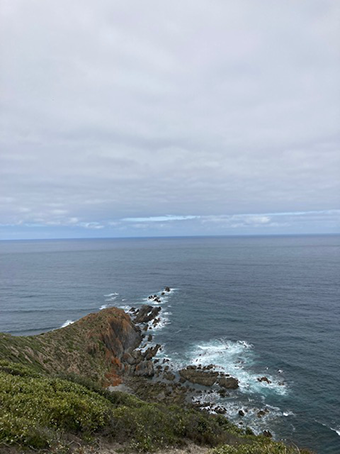
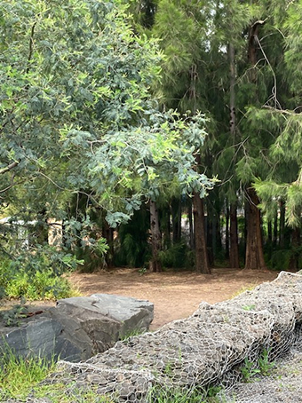

Nature
Nature is all around us, but most times we never really stop, slow down and really take nature in. Nature is beautiful, all the natural colours and shapes that occur around us are astounding. And sometimes it can be nice to just take a moment out of our day to just observe, and breath in the beauty around us. Something as simple as a flower in your garden or the tree that shades your backyard from the afternoon sun, is still so complex and amazing.
Animals are amazing too, did you know that pigeons are navigation experts, and that some of them are war veterans. As throughout the first world war pigeons were used to carry messages across long distances, that is pretty amazing. And just like plants, animals are all around us.




Taking photos of nature and animals
Taking photos of animals can be tough, as most of the time the animal you are trying to photograph can't stay still forever, so it is up to you to quickly snap the perfect shot before it runs away or moves out of sight. Try to approach with care, and don't spook the animal too much, remember if you are chill most of the time they will match that energy and be chill too. Sometimes though, it's best to try to shoot from afar as some animals might not like you in their personal space, so be careful.
This is the same with nature and plants, but at least plants can't run away from you, with plants you can take a little more time with you photos. Experimenting with angels and different tilts and ways of shooting your desired plant can be fun, so take your time.